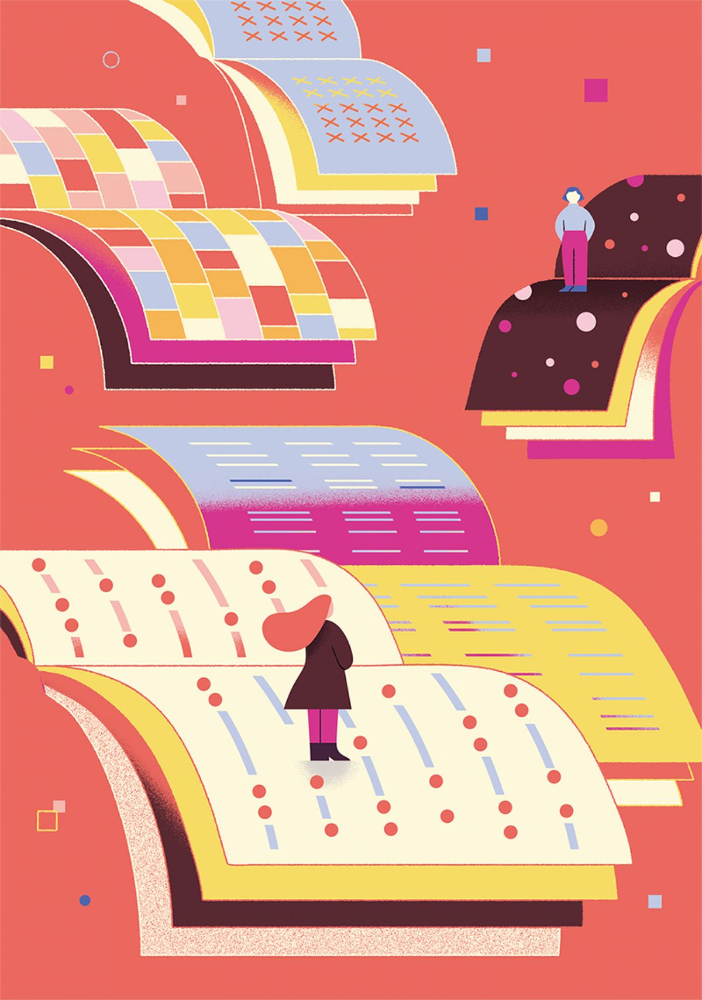
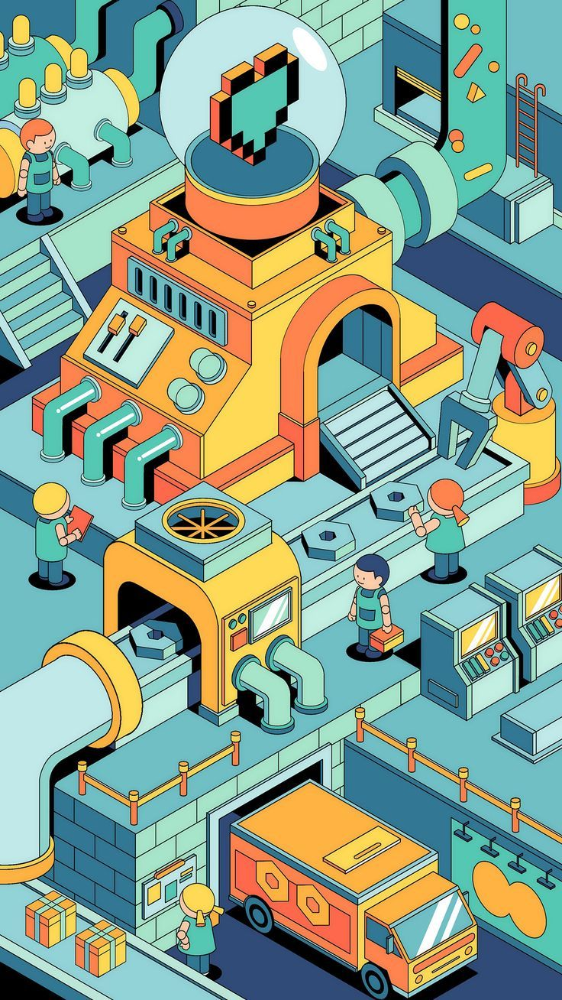
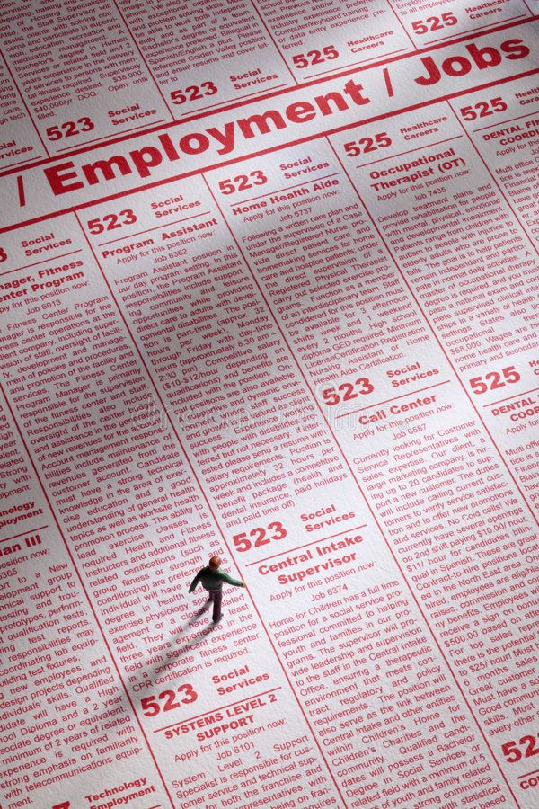
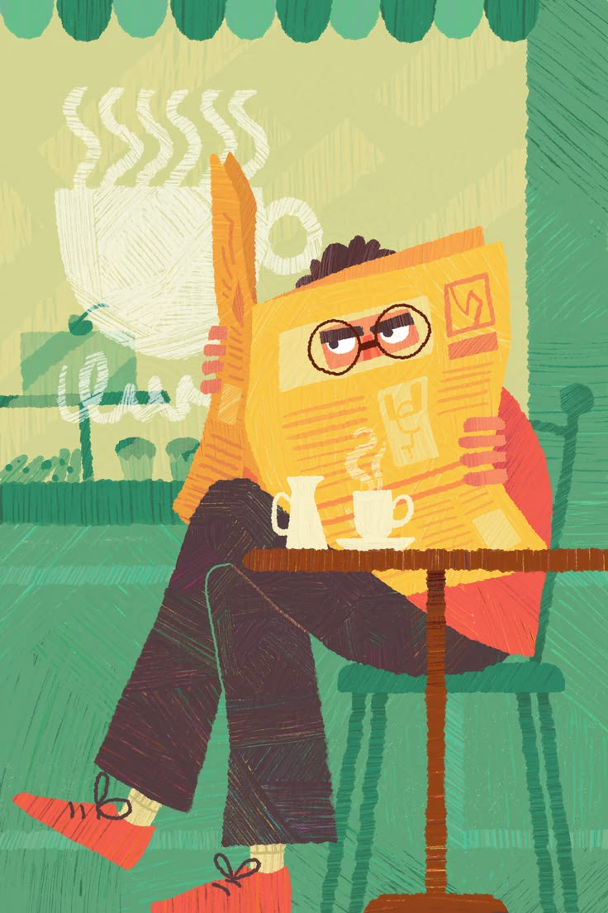
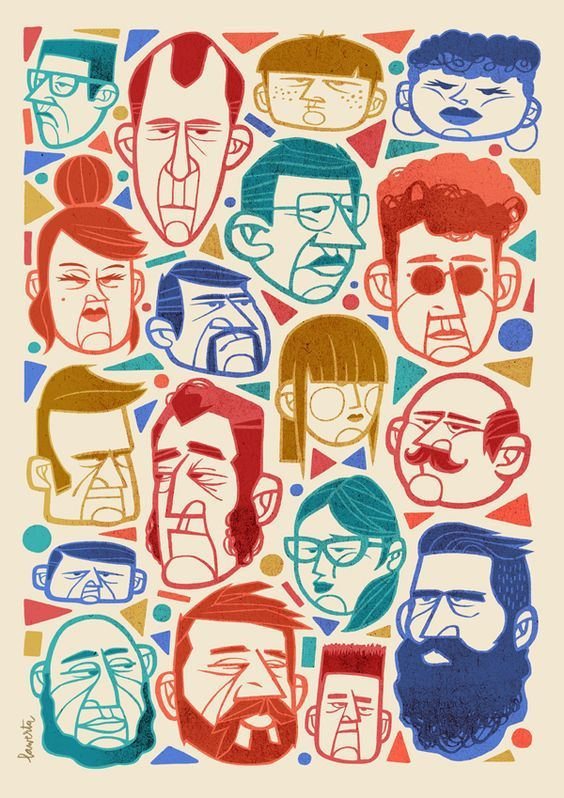
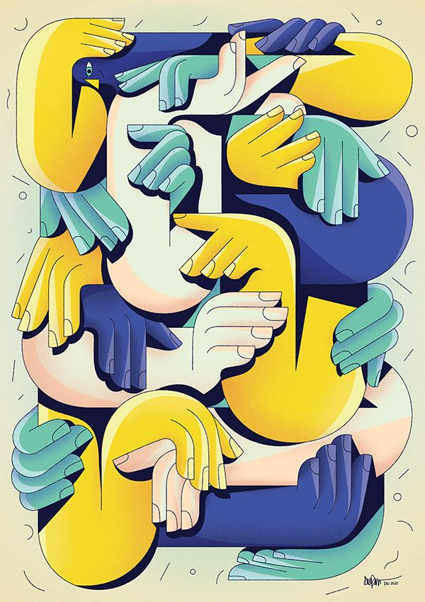
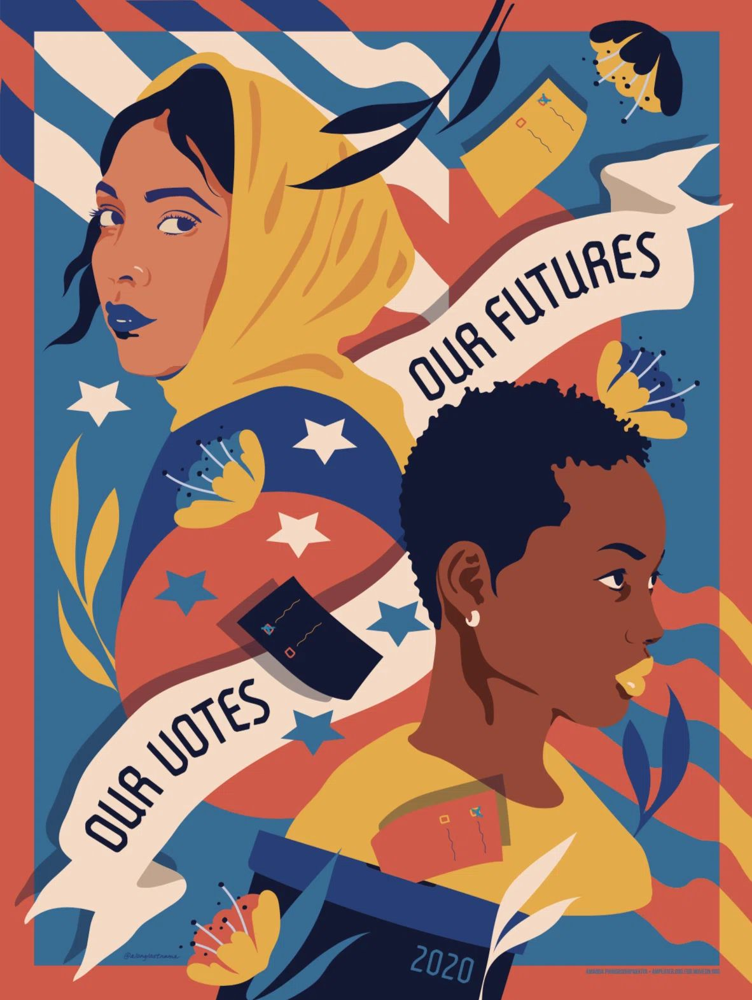

0.97
context precision, RAG thesis
72.2%
generation cost reduced
109.4%
quality vs. always-expensive baseline
347
tests, job-market pipeline
AI/ML and Data Engineer in Berlin. I build retrieval systems,
agents and pipelines, and instrument each one so cost and
quality are numbers, not opinions.
Hybrid retrieval, adaptive model routing, text-to-SQL agents, with RAGAS and LLM-as-judge evaluation built in.
Orchestrated ingestion into DuckDB and BigQuery, daily refresh in GitHub Actions, and test suites that run in CI.
Star-schema warehouses, Power BI and Looker Studio dashboards, and ranking and classification models with offline evaluation.

Hybrid BM25 and FAISS retrieval with cross-encoder reranking and rule-based LLM routing, evaluated on the EU AI Act, GDPR, NIST AI RMF and ISO/IEC 42001.

Text-to-SQL agent over a governed YAML semantic layer. Hybrid retrieval with reranking; SQL executed on read-only DuckDB behind SELECT-only, row-limit and timeout guardrails, with a validate-and-retry loop.

Daily ingestion from Bundesagentur für Arbeit, StepStone and LinkedIn into DuckDB via an Airflow DAG and GitHub Actions. Normalised titles, skill extraction, salary parsing and cross-source deduplication.
Kimball star schema over 100k+ e-commerce orders, 15 dbt models, tests run on every pull request, Looker Studio dashboard.

Ingestion, feature store, LightGBM ranker, multi-objective reranking and IPS/SNIPS counterfactual evaluation, served over FastAPI.

Text, speech and vision emotion models fused in PyTorch. Co-authored; my part was pipeline design, training and evaluation.

Real-time gesture recognition with MediaPipe and scikit-learn. Co-authored; my part was the offline ML pipeline, feature engineering and evaluation.

Batch data engineering pipeline on US polling data, orchestrated with Apache Airflow. Modular DAGs across ingestion, cleaning, feature engineering, and batch prediction layers. Academic project, Nov 2024 to Jan 2025.
Agree what is being answered, which sources are allowed, and what a correct answer looks like.
Build a gold set and pick metrics before tuning anything, so improvements are measured against a fixed reference.
Retrieval, routing, pipelines, with tests, telemetry and cost per query recorded as outputs.
A README, a dashboard and a test suite the next person can run.
I moved from analytics into building the systems analytics depends on. Two and a half years at NIIT, designing ML case studies and Power BI dashboards for enterprise training programmes, showed me what goes wrong when data and models are not measured. The MSc in Data Science at UE Berlin gave me the tools to measure them.
I am based in Berlin, graduating in August 2026, and EU Blue Card eligible for roles across the EU without employer sponsorship. I work in Python and SQL across retrieval systems, data pipelines and evaluation. Five peer-reviewed publications in IEEE and Springer.
Berlin, remote across the EU, or India.